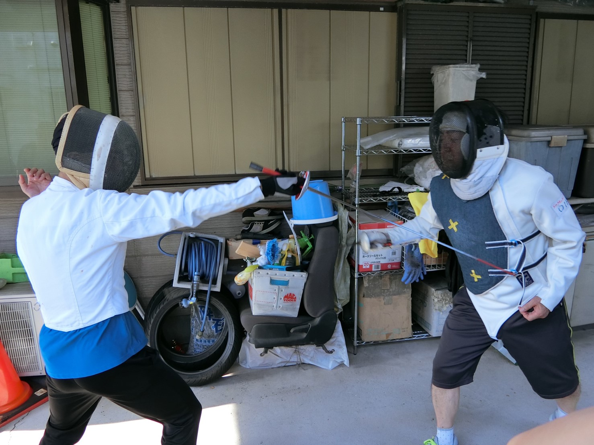
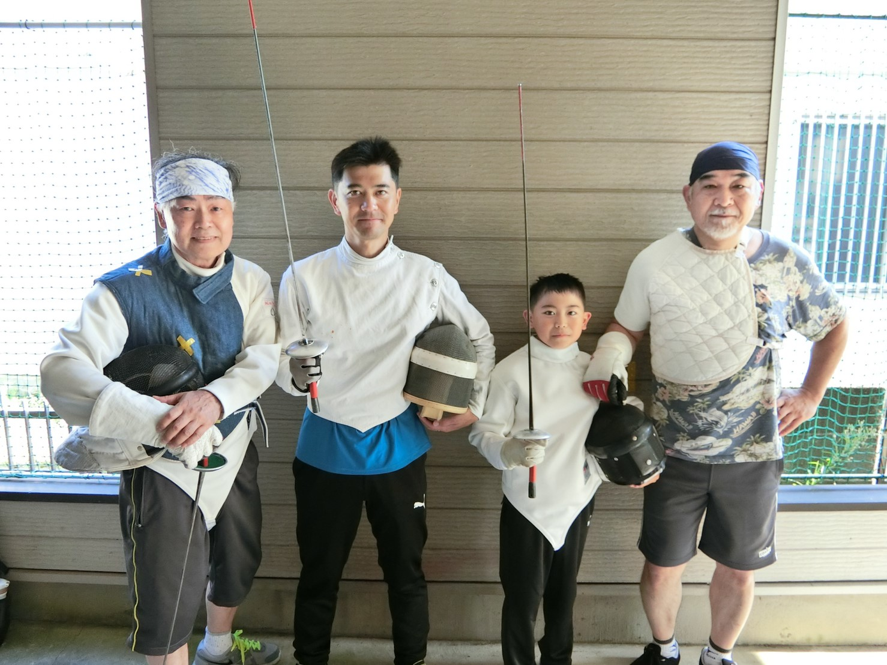
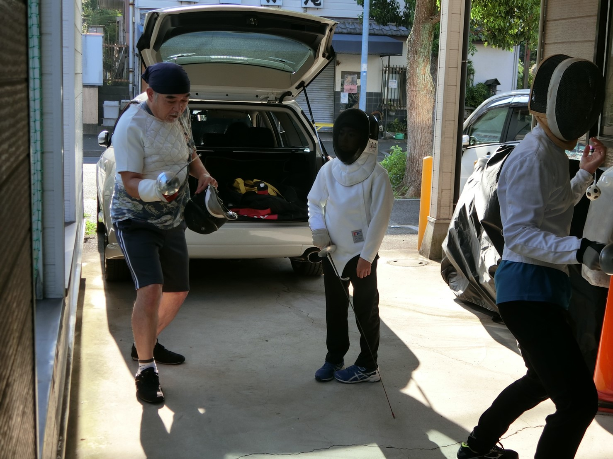

フ ェ ン シ ン グ 教 室 開 催 生 徒 募 集 の お 知 ら せ
フ ェ ン シ ン グ と 院 長

院長が学生時代にやっていたフェンシングに復帰して数年となります。高校時代には、フルーレ個人で神奈川県２位入賞、県代表としてインターハイに出場した事も有ります。
たまたま新聞のスポーツ欄でＪＲ大船駅近くの武道館を拠点とし活動しているクラブを知り、リスタートしました。
最近では戸塚スポーツセンターで練習しています。
週に１度は大汗をかいて運動し、維持することが大切と思い実行しています。
興味のある方にはクラブ紹介も行っています。
院 長 に よ る 個 人 指 導 、 始 め ま し た

当院併設の屋根付きガレージにて、フェンシングの個人レッスン。
初めての方、久しぶりの方、基礎を見直したい方。
一緒に汗をかいてみませんか？
ご希望により院内トレーニングマシンを利用できます。

まずは、やってみよう！
大人も子どももフェンシングが好きになる！
写真の一番左が院長。
レ ッ ス ン 場 所

当院ガレージ（屋根付き、普通車縦二台分のスペース）
駐車場あり（無料）
レ ッ ス ン ス ケ ジ ュ ー ル
毎週 土曜日 15時～
日曜日 10時～ 各 応相談
※予約制です。
レ ッ ス ン 種 目
フルーレ
（但し、電気審判期設備は有りません）
対 象 年 齢
・小学４年生以上～成人までの初心者
・性別不問
・基本レッスンを見直したい方
レ ッ ス ン 時 間
６０分（１５分程度の座学を含む）
レ ッ ス ン 料 金
4,000円
指 導 方 針
・皆様が所属しているクラブと保護者様の意向は大切に。
・武道、格闘技は基礎練習を大切に。
・フェンシング未経験の保護者様も選手目線で体験していただきます。
・騎士道精神にのっとり、「礼に始まり礼に終わり」ます。
・座学の中ではメンタル、ルール、その他、雑学などＱandＡもＯＫです。
・指導に全ての暴力はありません。
レ ッ ス ン イ メ ー ジ
実際のレッスンイメージ
お 申 込 み
お電話または尾池接骨院公式LINE よりお申込み下さい
よりお申込み下さい